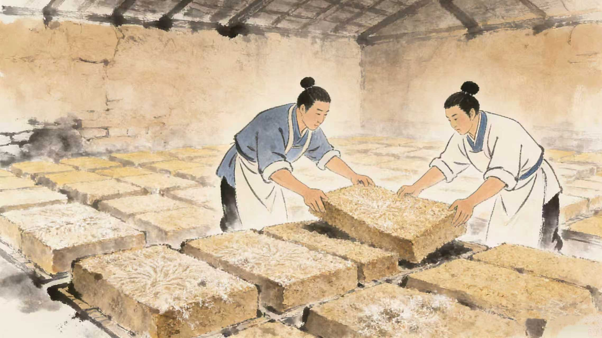

制曲
制曲是白酒酿造的核心环节，被称为“酒之骨”。以小麦、大麦、豌豆等为原料，经粉碎、加水拌料、压制成曲坯后，入曲房在适宜的温湿度下自然发酵。曲坯中滋生的微生物（如霉菌、酵母菌、细菌）会产生丰富的酶类，这些酶类是后续酿酒过程中淀粉转化为糖、糖转化为酒精的关键，不同香型白酒的制曲工艺、曲种（大曲、小曲、麸曲）和发酵周期差异显著，直接决定白酒的风味基调。
制曲是白酒酿造的核心环节，被称为“酒之骨”。以小麦、大麦、豌豆等为原料，经粉碎、加水拌料、压制成曲坯后，入曲房在适宜的温湿度下自然发酵。曲坯中滋生的微生物（如霉菌、酵母菌、细菌）会产生丰富的酶类，这些酶类是后续酿酒过程中淀粉转化为糖、糖转化为酒精的关键，不同香型白酒的制曲工艺、曲种（大曲、小曲、麸曲）和发酵周期差异显著，直接决定白酒的风味基调。